Reveal — AI Integration Visual Process
Sessions 1 & 2 · June 2026 · From first experiments to best result at strength 0.81.
Session 1
May–June 2026 · From ControlNet experiments to img2img Flux, finding the sketch–style tension.
Reveal — AI Integration Visual Process
Chronological overview of every approach tried, with visual results and what caused each change.
Before any AI was added, the app used algorithmically drawn canvas simulations for each artist — botanical lines for Merian, spirals for Bourgeois, etc. Beautiful but not transformative. The user's sketch was overlaid on a pre-drawn motif, not reinterpreted.
Why it wasn't enough: The output looked generated, not personal. The sketch didn't influence the style — it was just a trace on top of a generic motif.
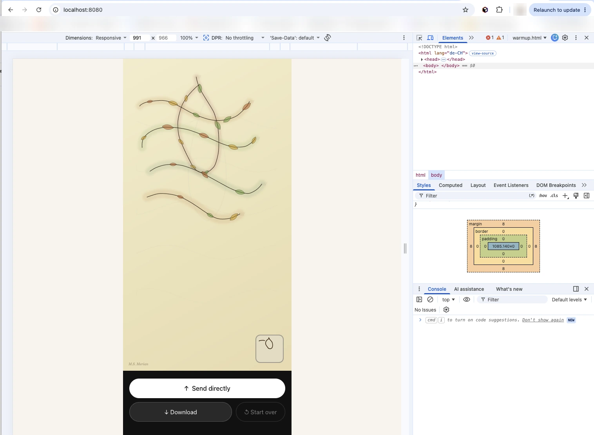
Canvas simulation — Merian botanical style. Instantly generated, always the same regardless of sketch.
Result: Beautiful but generic. Sketch had no influence on output. Not a "reveal."
First AI integration attempt. Used model version 854e8727... which turned out to be controlnet-hough — a model designed for detecting geometric lines in architectural photos. Completely wrong for hand-drawn sketches.
Why it looked the same: The Hough Lines model traces straight geometric lines and outputs them nearly unchanged. It doesn't apply artistic style. Also blocked by CORS — required building a Python proxy server to forward API calls.
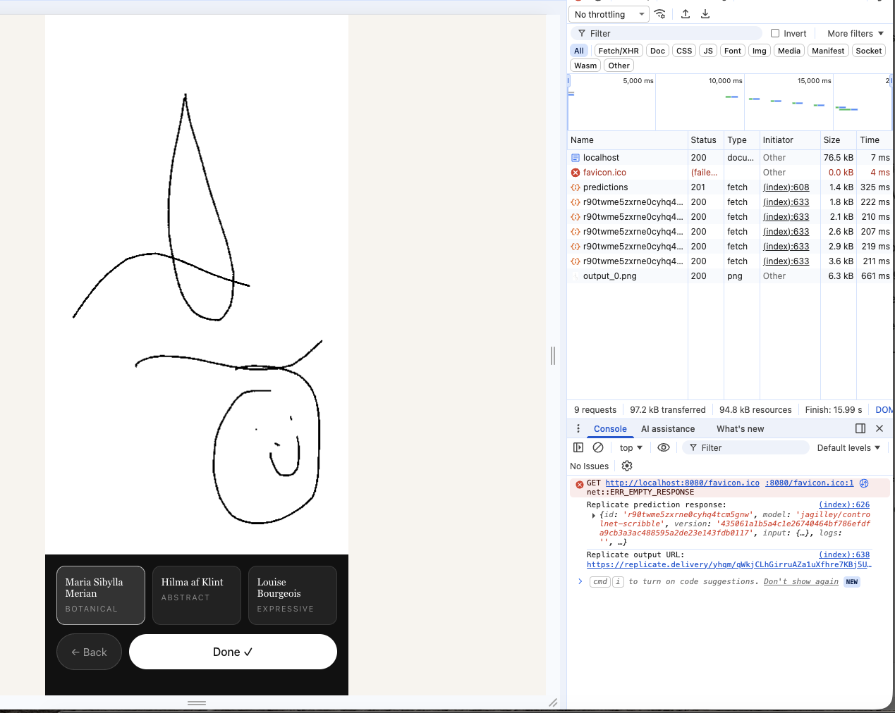
Output: cleaned-up sketch. No style applied. Looks identical to input.

Debug view showing the Replicate output — sketch-like, no transformation.
Result: Identical to sketch input. $10 spent with zero visual improvement.
Switched to the correct scribble model (version 435061a1...). ControlNet Scribble is designed for hand-drawn input. But its core design is to preserve your sketch structure — it adds minimal style on top rather than transforming the image.
Why it still looked like a sketch: ControlNet Scribble is the wrong tool for a "reveal" effect. It's built for keeping your lines and adding texture — not for dramatically reimagining the image in an artist's style.
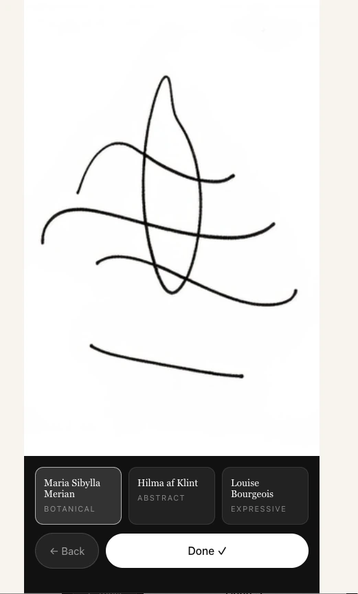
Merian — clean sketch. Style barely visible.
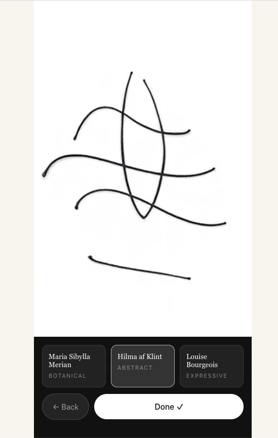
af Klint — same sketch with slight texture.
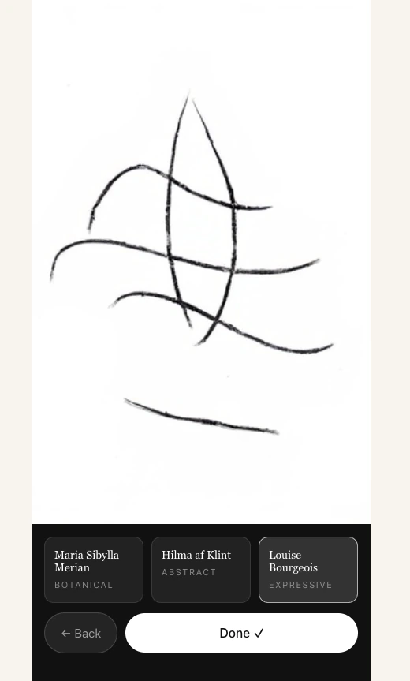
Bourgeois — rough texture added, but no transformation.
Result: Marginally different from sketch. The "style" was a texture overlay, not an artistic transformation. Dead end.
Complete switch to fal.ai and Flux — a next-generation model. No proxy needed (CORS-friendly). At strength 0.85, the model discards most of the sketch and generates a new image guided primarily by the artist prompt. The results were dramatically different from anything before.
Why it suddenly worked: Flux is a fundamentally more powerful model than SD 1.5-based ControlNet. It understands artist names deeply and generates in their actual visual language. The sketch at 0.85 strength serves as a thematic prompt, not a compositional guide.
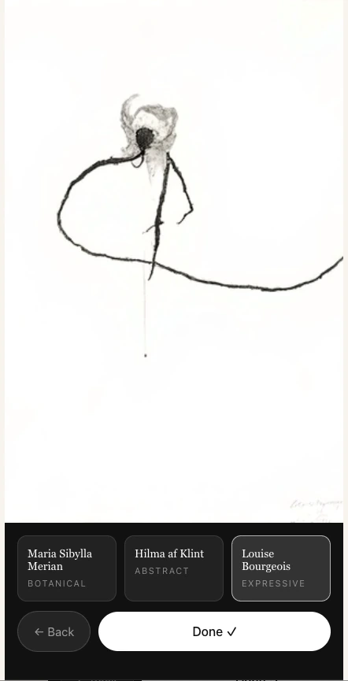
⭐ Bourgeois — Flux generated her iconic spider. Unmistakable.
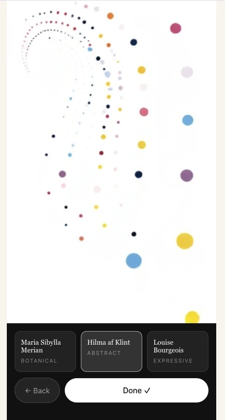
⭐ Kusama — colourful scattered dots following sketch curve. Very her.
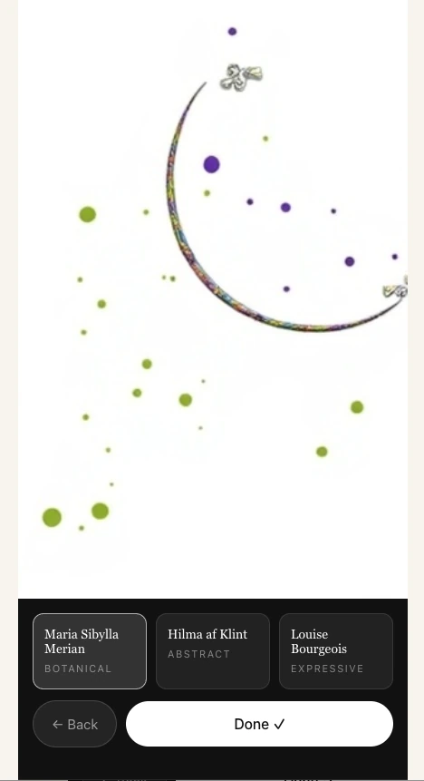
⭐ Merian — crescent shape with botanical decoration. Striking.
Result: First genuine "wow." Artist styles clearly recognisable. Problem: sketch composition completely ignored — model treats the word/theme as input, not the drawing.
Attempted to bring the sketch composition back by lowering strength to 0.65. The model now followed the sketch more closely — but lost the artistic style entirely.
Why it regressed: At 0.65, the model doesn't have enough freedom to apply a dramatic style transformation. The output is essentially a cleaned-up, slightly textured version of the sketch.
Merian at 0.65 — sketch preserved, zero style.
af Klint at 0.65 — same sketch, slightly different line quality.
Bourgeois at 0.65 — rougher texture but no transformation.
Result: Back to square one. Confirmed the fundamental tension: sketch fidelity vs. style transformation are in direct conflict.
Updated artist lineup to the final 5 chosen artists. Added the user's keyword (e.g. "water") directly into the AI prompt. Strength set to 0.78 as a compromise between sketch and style. Also added image caching per artist so switching cards doesn't re-generate.
What improved: Kara Walker produced silhouette figures standing on the wave lines of the sketch. Saint Phalle produced mosaic dotted curves. Both followed the sketch composition while applying some style. Bourgeois still gravitates toward her spider regardless of sketch.
Input sketch (keyword: water)
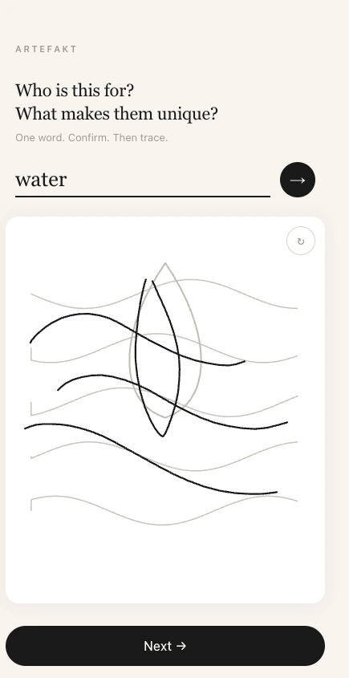
User sketch — keyword: water
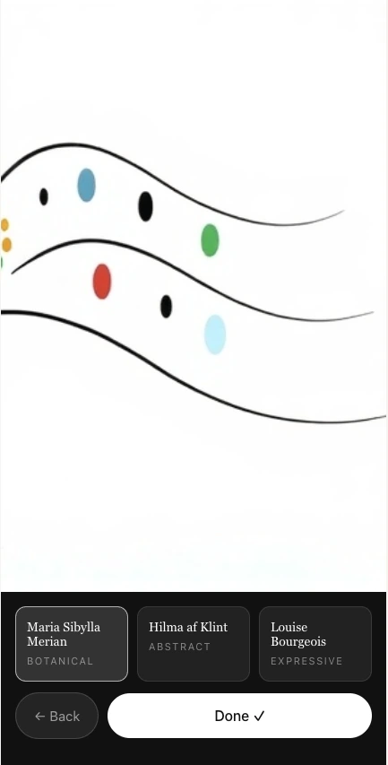
Kusama — dots along wave lines
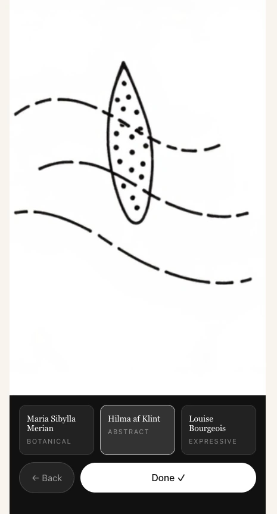
af Klint — dotted seed/leaf form
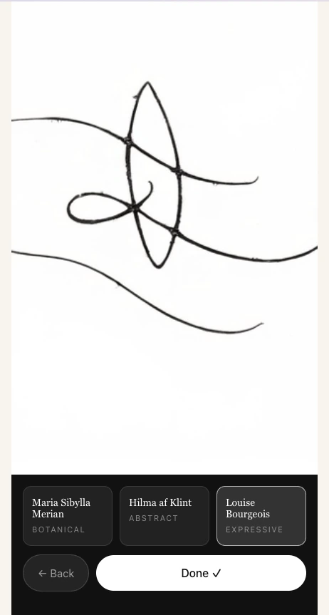
Bourgeois — thorny dark lines
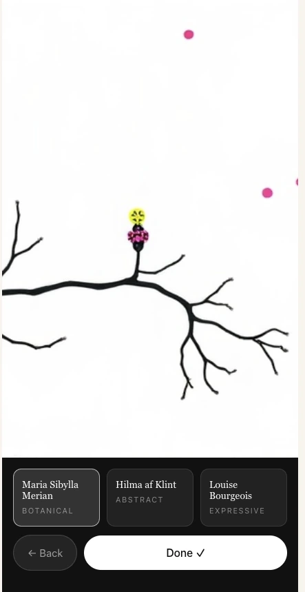
Merian — botanical branch
Second sketch test (keyword: water + hearts)
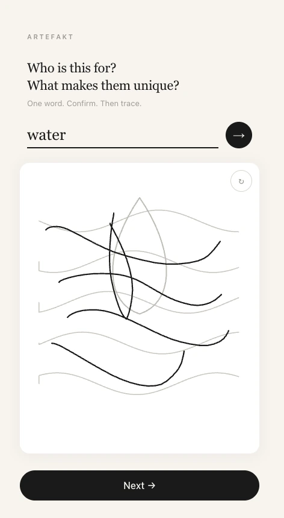
User sketch — keyword: water
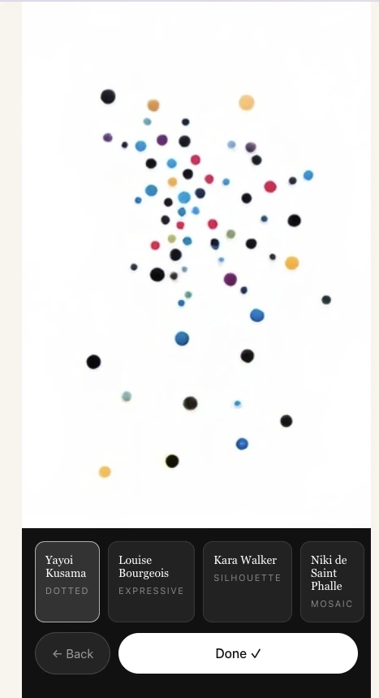
⭐ Kusama — colourful dot constellation
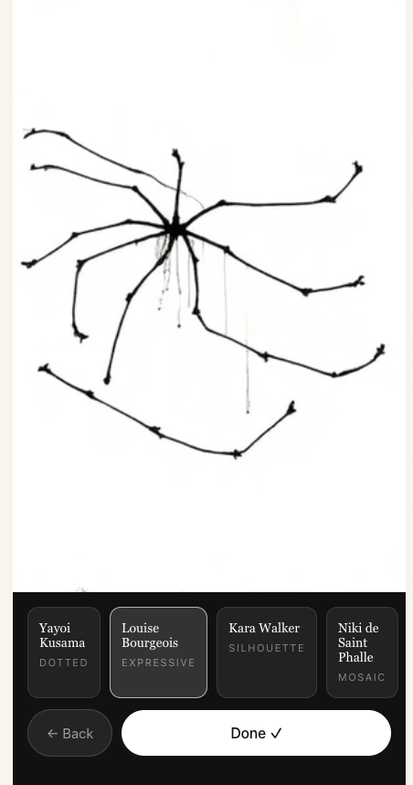
⭐ Bourgeois — spider, full legs spread
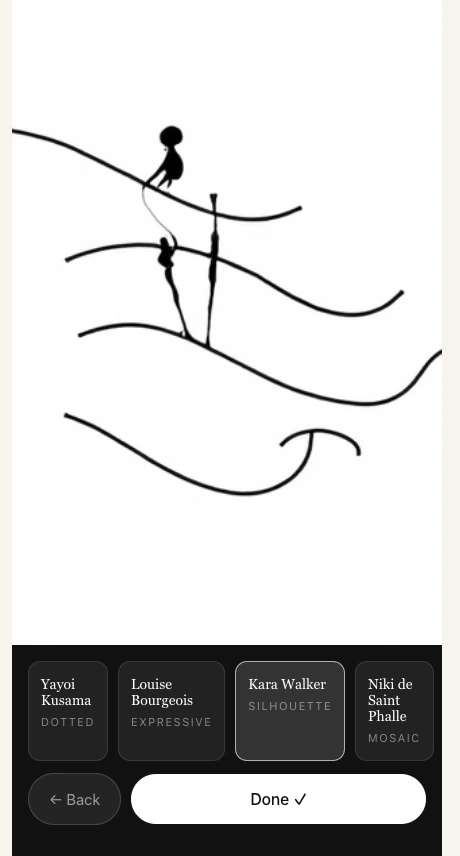
⭐ Walker — silhouettes on wave lines
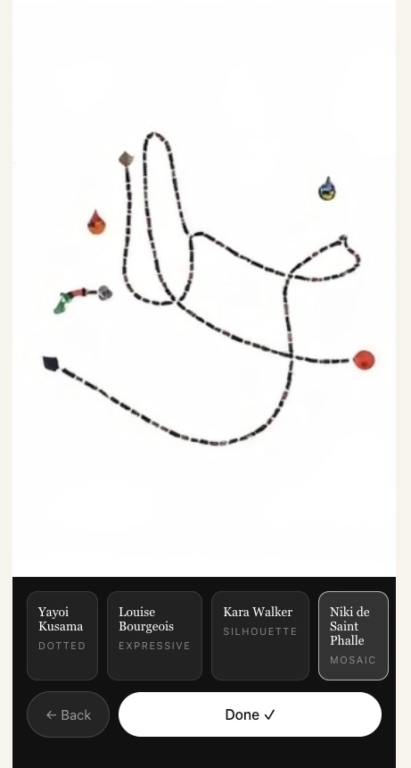
⭐ Saint Phalle — mosaic dotted curves
Result: Best balance so far. Kara Walker and Saint Phalle most promising — they follow sketch AND show style. Bourgeois always produces her spider regardless of input. Styles not yet distinctive enough (no colour for Saint Phalle, no true silhouette for Walker).
Lowered strength further to 0.72 to bring sketch back more. Also made sketch lines thicker in the export (6px) to give the model more to grip onto.
Why it regressed: 0.72 is too close to 0.65. The style collapses again. The thick lines made the exported sketch more prominent but the model still couldn't balance composition fidelity and style transformation at this strength.
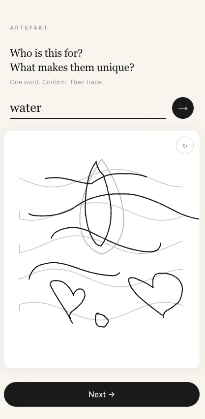
Input sketch — water + hearts. Note thicker exported lines.
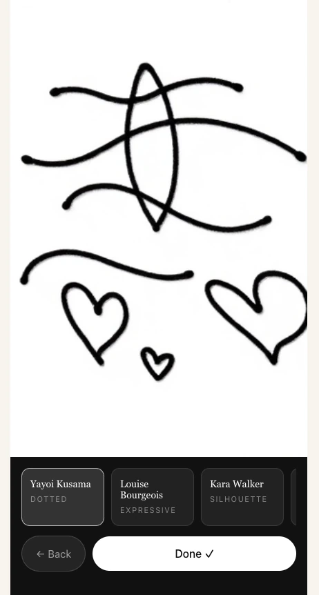
Kusama — sketch visible, style lost
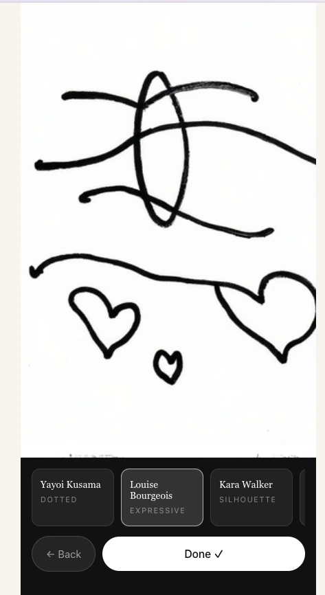
Bourgeois — sketch with rough texture
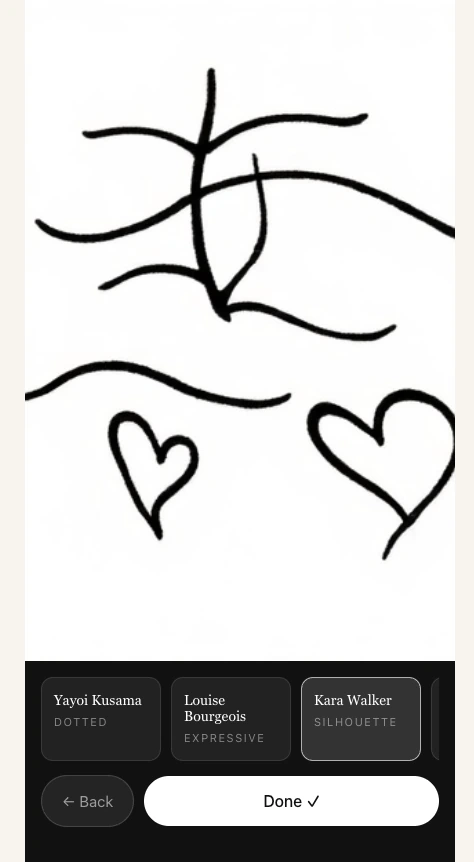
Walker — sketch, no silhouettes
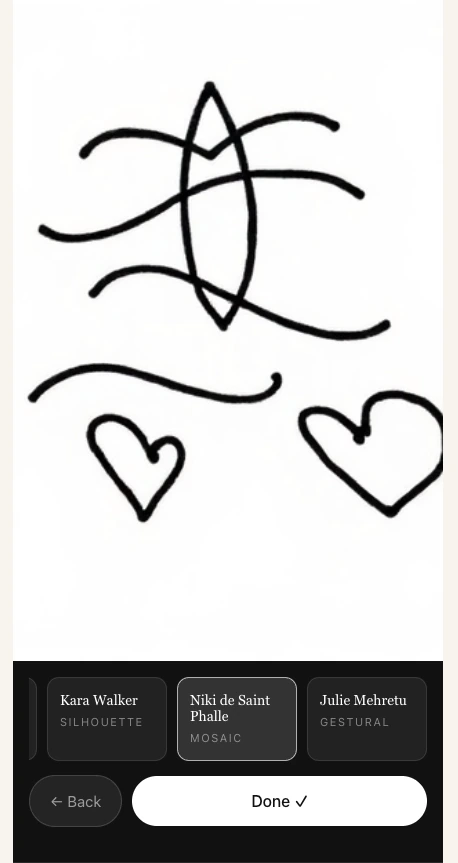
Saint Phalle — sketch, no colour
Result: Regression. Style disappeared. Confirmed that anything below 0.78 kills the artistic transformation with Flux img2img.
New approach: instead of passing the user's sketch as input, pass an actual image of the artist's work (hosted on Cloudinary). The model uses the reference artwork as its primary visual style guide. The sketch is no longer the input image — the keyword + prompt drive the subject, and the reference image drives the style.
Why this should work better: Text prompts alone can't perfectly reproduce an artist's specific visual language. Showing the model a real Kara Walker silhouette or a real Kusama dot painting gives it the exact visual register to match. The output should be unmistakably each artist.
No screenshots yet — test this next session
Results pending. Test with keyword "water" and compare all 5 artists.
Reference images selected (hosted on Cloudinary de5zaer16):
| Kusama |
Radiating pink/red flower painting — kusama-1_fbppsx.jpg |
| Bourgeois |
Red/black spiral prints — bourgeois_3_hovuxr.jpg |
| Kara Walker |
Full silhouette mural — waker-1_dji7js.jpg |
| Saint Phalle |
Tarot garden painting — saintphalle-1_gy6rbb.jpg |
| Mehretu |
Explosive layered abstraction — mehretu-1_gfib73.jpg |
Switched to Canny ControlNet: sketch edges used as structural guide, artist style from prompt only. Sketch composition was respected — but canny edge detection caused the model to render every line as a glowing neon tube. All artists looked like neon-light installations regardless of prompt.
Why it failed: Canny treats sketch edges as bright hard edges to render literally. The model's default interpretation of "bright edge on dark background" = glowing neon tube. Artist prompts weren't strong enough to override this visual artifact.
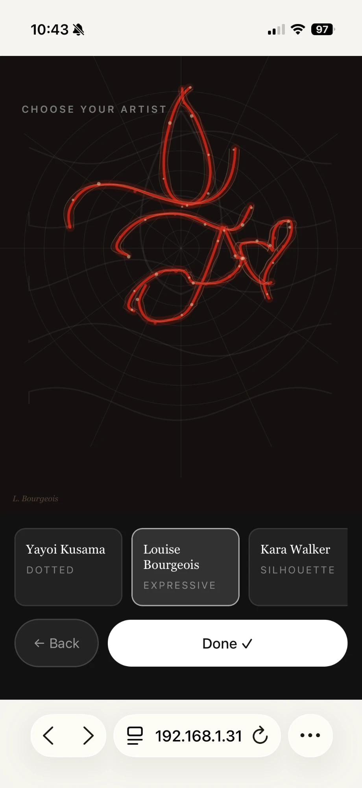
Bourgeois — red neon tubes exactly following sketch. Composition correct, material completely wrong.
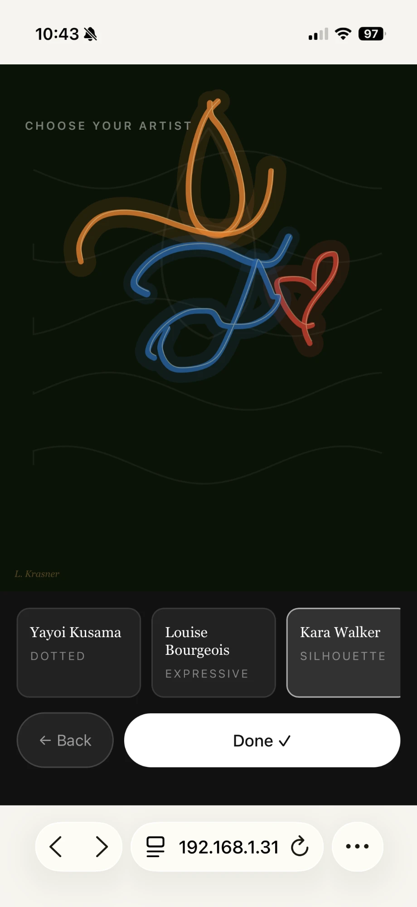
Walker (labeled "L. Krasner" — UI bug) — multicoloured neon. Artists indistinguishable from each other.
Result: Sketch preserved but all artists looked identical — neon light tubes. Wrong endpoint for this use case.
Returned to img2img with sketch as input. Rewrote all prompts using a new approach: instead of describing the artist's style generically, describe what the sketch's lines ARE MADE OF. "Lines rendered as thick crimson yarn on cream linen" works better than "Louise Bourgeois artwork." Added explicit composition-preservation rule at start of every prompt.
Key prompt insight: Describe the output in three layers: (1) what the lines become as a physical material, (2) what the background is, (3) what small artist motifs appear as additions along the lines — not replacement subjects. This prevented the model from generating "artist icon" (spider, Nana) and instead made it treat the sketch's lines.
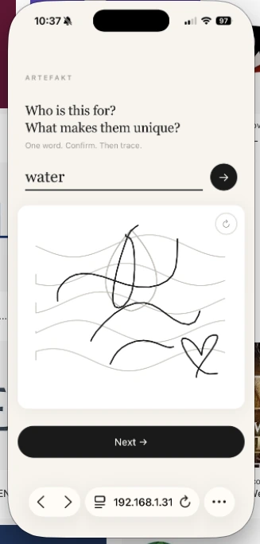
Input sketch — same water drawing sent to all 5 artists.
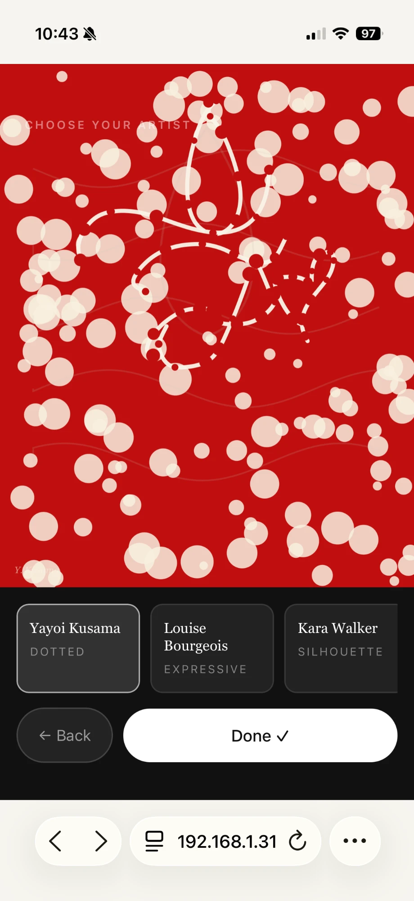
⭐ Kusama — vivid red background, pink/cream bubbles clustered along sketch lines. First result that is both clearly Kusama AND follows the sketch composition.
Result: Breakthrough. Kusama result shows both sketch composition AND artist style simultaneously. "Line treatment" prompt approach became the template for all artists. Walker and Bourgeois also improved significantly (no screenshots saved for those).
Final state of session: all 5 artists generate simultaneously when the user enters Screen 2, cached so card switching is instant with no extra API calls. Prompts settled using line-treatment language for each artist: Kusama = dots · Bourgeois = red thread + spider detail · Walker = black silhouette ribbons + tiny figures · Saint Phalle = thick outlines + flat colour fills + scattered symbols · Mehretu = overlapping trajectories + colour washes.
Outstanding issues going into Session 3: Kusama colour inconsistent (sometimes dots, sometimes constellation look). Mehretu needs more energy and colour. B&W sketch input biases output toward monochrome. Canvas fallback renders for Walker, Saint Phalle, Mehretu still placeholder code.
No end-of-session screenshots saved — add from Session 3 testing
Add screenshots here when retesting the Session 2 prompts in Session 3.
Result: Best architecture and prompts so far. Bourgeois and Walker strongest. Kusama needs colour work. Good enough to present as a prototype — not yet perfect.
Key Insight — The Core Tension
Every attempt so far has hit the same wall: sketch fidelity and style transformation are in direct conflict with img2img. High strength → beautiful style, no sketch. Low strength → sketch preserved, no style. The IP-Adapter approach (Phase 7) sidesteps this by separating the two concerns — style comes from a reference image, composition comes from the prompt.
| Phase |
Model |
Sketch followed? |
Style visible? |
Verdict |
| 0 | Canvas simulation | No | Somewhat | Generic |
| 1 | ControlNet Hough | Yes (lines only) | No | Identical to sketch |
| 2 | ControlNet Scribble | Yes | Barely | Sketch + texture |
| 3 | Flux 0.85 | No | ⭐ Yes | Wow — no composition |
| 4 | Flux 0.65 | Yes | No | Sketch again |
| 5 | Flux 0.78 + 5 artists | Partially | Partially | Best balance so far |
| 6 | Flux 0.72 + thick lines | Yes | No | Regression |
| 7 | Flux Pro Redux + refs | TBD | TBD | Not yet tested |
Generated from session notes — Reveal / Artefakt · June 2026
Session 2
June 5 2026 · Testing redux, discovering the "artist icon" problem, finding the best balance yet at strength 0.81.
Reveal — Visual Process · Session 2
June 5 2026 · Testing redux, discovering the "artist icon" problem, finding the best balance yet at strength 0.81.
Tested the redux endpoint built at the end of Session 1. Results looked like each artist but had zero connection to the sketch. The bug: base64Image was generated but never sent in the API body. The model only received the Cloudinary artist reference photo and simply remixed it.
Bug: Sketch generated but never included in the API call. Output = remix of artist reference photo. Sketch had 0% influence on any result.
Input sketch

Keyword: water. This sketch had no influence on output.
Kusama

Remix of Kusama reference photo. Her dot flower — but not the sketch.
Bourgeois

Spirals from reference image. No sketch connection.
Walker

Antebellum silhouette scene. Recognizable but sketch absent.
Result: Artistically recognizable but broken as a product. The sketch had zero influence. Redux with artist reference abandoned entirely.
Returned to the proven img2img endpoint, now passing the sketch (not artist reference) as a base64 data URL directly. Sketch composition is visible in every result — but the style is weak: all outputs look like cleaned-up or thickened versions of the sketch lines without clear artistic material.
Problem: Prompts were still too generic ("Louise Bourgeois artwork") — the model had no specific material to apply. Lines became thick and calligraphic but not transformed.
Input sketch

Water drop + wave lines. Keyword: water.
Kusama

Sketch + small red dot area. Composition visible, style weak.
Bourgeois

Thick calligraphic black lines. Sketch visible, no material.
Walker

Thick brush lines. Sketch traceable, no silhouette.
Saint Phalle

Thick outline form. Sketch present, no color or naïve style.
Result: Sketch visible in all — progress. But no artistic transformation. Prompts need to describe what the lines are MADE OF, not who the artist is.
Shared visual references of Bourgeois and Saint Phalle's actual work to write more precise prompts. The key insight: describe the material and surface of each artist's work, not their biography.
Bourgeois references shared

Grid of small ink drawings — spider forms, body shapes, blue & red ink on cream paper.

Spider web textile on aged linen — radial stitching in fine thread.

Clock embroidered in red yarn on cream fabric — oval in red thread.

Fabric book — looping colored ribbon shapes on pink fabric.

Pink ribbon loops on patchwork linen — flowing, knotting, tangling.

Textile work — pink fabric strips looping on patched background.
Prompt insight from Bourgeois references
The LINE itself is made of thread. Not the spider — the spider inhabits the line. Background is aged cream linen patchwork. Colors: crimson red thread, cream fabric, sparse earth tones. No paint, no ink, no black.
Key prompt shift: from "Bourgeois artwork" to "red hand-stitched yarn on aged cream linen, spider along the line as detail, not the main subject."
Rewrote all prompts to describe the output in three layers: (1) what the lines become, (2) what the background is, (3) what small motifs are added. Bourgeois became the first real "material transformation" — red yarn thread on cream linen, with spider webs stitched around it. This became the template for all other artists.
Input sketch

Water drop + wave lines. Keyword: water.
Kusama

Dots scattered along sketch curves. Composition follows the sketch.
⭐ Bourgeois

⭐ Red yarn thread on cream linen. Spider web stitching as background. First real material transformation.
Walker

Silhouette figure on water. Strong style but narrative too independent of sketch.
Saint Phalle

Thick outlines with small colored accents, flowers, hearts. Sketch visible.
Mehretu

Explosive starburst / dandelion — gestural energy but reads as radial, not Mehretu.
Result: Bourgeois breakthrough. The thread material is immediately recognizable. Sketch composition preserved. This became the template: describe what the lines ARE MADE OF.
As prompts improved and strength increased, a new problem emerged: the model stopped transforming the sketch and started generating each artist's most famous imagery instead. Bourgeois = spider (no sketch). Walker = narrative scene (no sketch). Saint Phalle = Nana figure (no sketch). Artistically strong, but the product promise was broken.
The core distinction
The model was doing sketch → artist icon instead of sketch → artist treatment.
The transformation rule should be: the artist applies their visual language to the sketch's lines — not: the artist generates their most famous imagery inspired by the keyword.
The sketch must remain the structural backbone. Artist motifs (spider, Nana, figures) should be additions along the lines, not replacement subjects.

Strength 0.85 — Mehretu grid, Bourgeois spider, Walker landscape, Saint Phalle outline, Mehretu again. All recognizable as artists. None connected to the sketch.
Result: Artistically strong but the user's sketch had disappeared. Pivoted: every prompt now opens with "KEEP THE EXACT LINE COMPOSITION OF THE SKETCH" + describes the transformation of lines specifically.
All prompts rewritten with composition-preservation rule first. Results improved — sketch more visible — but 0.84 still gives the model too much freedom. Kusama goes to colored constellation dots, Bourgeois goes to spider, Walker and Saint Phalle work better.

Strength 0.84 — Kusama colored dots (constellation), Bourgeois spider (strong), Walker animal silhouettes, Saint Phalle snake/doodle, Mehretu grid. Mixed — Walker and Saint Phalle following sketch better.
Result: Progress. Sketch more visible. But 0.84 still too free for Kusama and Bourgeois — they revert to iconic imagery. Need to go lower.
Strength settled at 0.81 — enough style to transform, enough structure to recognize the sketch. All 5 artists generated in parallel on screen load and cached, so switching between cards costs zero extra API calls. Transformation rules: Kusama = lines as dot chains · Bourgeois = lines as red thread, spider along it · Walker = lines thickened into black silhouette ribbons with tiny figures at edges · Saint Phalle = lines as thick outlines with flat color fills and naïve symbols · Mehretu = lines multiplied into overlapping trajectories with color washes.

⭐ Strength 0.81 — best result of session. All 5 artists: Kusama colored dots, Bourgeois red thread + spider, Walker figure on line, Saint Phalle colorful naïve forms, Mehretu colored layered lines. Sketch gesture visible in all.
Result: Best of session. All 5 artists show the sketch composition. Bourgeois and Walker strongest. Kusama color inconsistent across runs. Good enough to present — not yet perfect.
Session 2 Summary
| Phase | Approach | Sketch visible? | Style recognizable? | Verdict |
|---|
| 8 | Redux + Cloudinary artist reference | No — bug, sketch never sent | Yes | Dead end |
| 9 | img2img 0.78–0.82, generic prompts | Yes | Barely | Sketch visible, no style |
| 10 | Artist reference research (Bourgeois, Saint Phalle) | — | — | Prompt insight: describe the material |
| 11 | Material prompts — "lines as red thread on linen" | Yes | Bourgeois ⭐ yes, others partial | Breakthrough on Bourgeois |
| 12 | Higher strength 0.84–0.85 | No — sketch abandoned | Yes, strongly | "Artist icon" problem diagnosed |
| 13 | Line-first prompts + strength 0.84 | Partially | Partially | Improving, still some icon drift |
| 14 | Strength 0.81 + parallel pre-generation | ✅ Yes, all 5 | ✅ Mostly | Best result of session |
Session 2 · June 5 2026 · Reveal / Artefakt